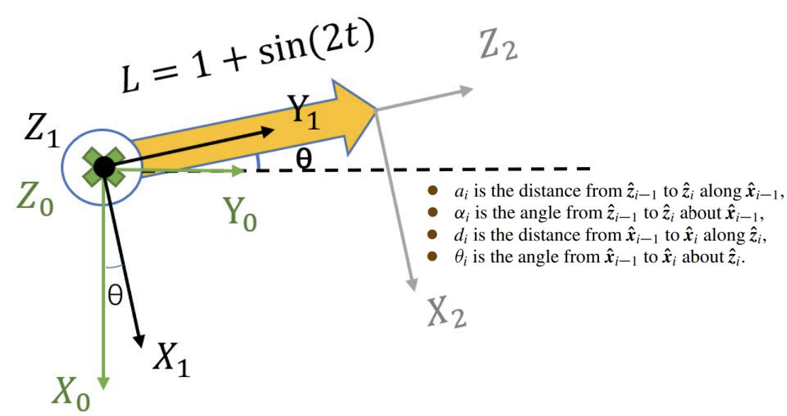
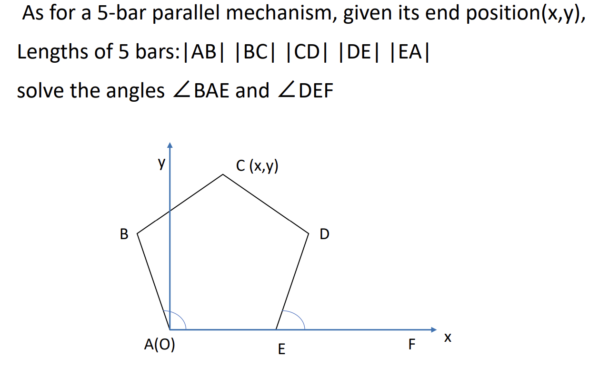

Medical Robotics - Chapter 2: Kinematics - 2
1. 位置的表达
一个点在坐标系 $j$ 中的位置可以用列向量表示：
$$
^j\mathbf{p}_j = \begin{bmatrix} x \\ y \\ z \end{bmatrix}_j
$$
其中上标 $j$ 表示该位置向量是以坐标系 $j$ 为参考系。
2. 坐标变换：平移与旋转
若坐标系原点发生平移，则新坐标为：
$$
\begin{cases}
x_{\text{new}} = x_{\text{old}} + T_x \\
y_{\text{new}} = y_{\text{old}} + T_y
\end{cases}
$$
若存在旋转，则两个坐标系之间存在旋转矩阵：
$$
^jR_i =
\begin{bmatrix}
x'_1 & y'_1 & z'_1 \\
x'_2 & y'_2 & z'_2 \\
x'_3 & y'_3 & z'_3
\end{bmatrix}
$$
每列向量表示坐标轴方向余弦。
3. 二维旋转矩阵
向量的旋转：
$$
\begin{bmatrix}
\cos\beta & -\sin\beta \\
\sin\beta & \cos\beta
\end{bmatrix}
$$
坐标系的旋转：
$$
\begin{bmatrix}
\cos\beta & \sin\beta \\
-\sin\beta & \cos\beta
\end{bmatrix}
$$
4. 欧拉角（Euler Angles）
欧拉角表示姿态的一种方式，包含三个旋转角：Yaw（偏航）Pitch（俯仰）Roll（滚转）
内旋：坐标系不动，物体自身转动（右乘）
外旋：坐标系跟着物体旋转（左乘）
旋转顺序表达：
$$
R = R_z(\alpha) \cdot R_y(\beta) \cdot R_x(\gamma)
$$
示例：Yaw = 45°, Pitch = 30°, Roll = 60°
$$
\alpha = \frac{\pi}{4}, \quad \beta = \frac{\pi}{6}, \quad \gamma = \frac{\pi}{3}
$$
分解旋转矩阵：
$$
R_z(\alpha) =
\begin{bmatrix}
\cos\alpha & -\sin\alpha & 0 \\
\sin\alpha & \cos\alpha & 0 \\
0 & 0 & 1
\end{bmatrix}
=
\begin{bmatrix}
\frac{\sqrt{2}}{2} & -\frac{\sqrt{2}}{2} & 0 \\
\frac{\sqrt{2}}{2} & \frac{\sqrt{2}}{2} & 0 \\
0 & 0 & 1
\end{bmatrix}
$$
$$
R_y(\beta) =
\begin{bmatrix}
\cos\beta & 0 & \sin\beta \\
0 & 1 & 0 \\
-\sin\beta & 0 & \cos\beta
\end{bmatrix}
=
\begin{bmatrix}
\frac{\sqrt{3}}{2} & 0 & \frac{1}{2} \\
0 & 1 & 0 \\
-\frac{1}{2} & 0 & \frac{\sqrt{3}}{2}
\end{bmatrix}
$$
$$
R_x(\gamma) =
\begin{bmatrix}
1 & 0 & 0 \\
0 & \cos\gamma & -\sin\gamma \\
0 & \sin\gamma & \cos\gamma
\end{bmatrix}
=
\begin{bmatrix}
1 & 0 & 0 \\
0 & \frac{1}{2} & -\frac{\sqrt{3}}{2} \\
0 & \frac{\sqrt{3}}{2} & \frac{1}{2}
\end{bmatrix}
$$
5. 齐次变换与姿态求解
$$
^jR_i =
\begin{bmatrix}
r_{11} & r_{12} & r_{13} \\
r_{21} & r_{22} & r_{23} \\
r_{31} & r_{32} & r_{33}
\end{bmatrix}
$$
欧拉角计算：
$$
\beta = \arctan2(-r_{31}, \sqrt{r_{11}^2 + r_{21}^2}) \\
\alpha = \arctan2(r_{21}, r_{11}) \\
\gamma = \arctan2(r_{32}, r_{33})
$$
6. Homogeneous Transformation 齐次变换
$$
^jT_i =
\begin{bmatrix}
^jR_i & ^j\mathbf{p}_i \\
0 & 1
\end{bmatrix}
$$
$$
\mathbf{r}_j = ^jT_i \cdot \mathbf{r}_i,
\quad
\mathbf{r}_i =
\begin{bmatrix}
x_i \\ y_i \\ z_i \\ 1
\end{bmatrix}
$$
7. Generalized Coordinates 广义坐标
系统状态用一个较小的向量表示：
$$
\mathbf{q} = [q_1, q_2, \dots, q_n]^T
$$
每个 $q_i$ 是一个广义坐标。
8. DH参数法与坐标变换
变换顺序：
$$
\text{Rot}(x_{i-1}, \alpha_i)
\rightarrow \text{Trans}(x_{i-1}, a_i)
\rightarrow \text{Rot}(z_i, \theta_i)
\rightarrow \text{Trans}(z_i, d_i)
$$
总变换矩阵：
$$
T_i^{i-1} =
\begin{bmatrix}
\cos\theta_i & -\sin\theta_i \cos\alpha_i & \sin\theta_i \sin\alpha_i & a_i \cos\theta_i \\
\sin\theta_i & \cos\theta_i \cos\alpha_i & -\cos\theta_i \sin\alpha_i & a_i \sin\theta_i \\
0 & \sin\alpha_i & \cos\alpha_i & d_i \\
0 & 0 & 0 & 1
\end{bmatrix}
$$
9. Workspace 工作空间
末端执行器在所有关节配置下可达的点集定义为其工作空间。
10. Forward Kinematics 正运动学

| i | $\alpha$ | a | d | $\theta$ |
|---|
| 1 | 0 | 0 | 0 | $\theta$ |
| 2 | $-\frac{\pi}{2}$ | 0 | L | 0 |
$$
^0T_1 =
\begin{bmatrix}
\cos\theta & -\sin\theta & 0 & 0 \\
\sin\theta & \cos\theta & 0 & 0 \\
0 & 0 & 1 & 0 \\
0 & 0 & 0 & 1
\end{bmatrix}, \quad
^1T_2 =
\begin{bmatrix}
1 & 0 & 0 & 0 \\
0 & 0 & 1 & L \\
0 & -1 & 0 & 0 \\
0 & 0 & 0 & 1
\end{bmatrix}
$$
$$
^0T = ^0T_1 \cdot ^1T_2
$$
$$
\begin{bmatrix}
P
\end{bmatrix}
=
^0T
\begin{bmatrix}
P' \\ 1
\end{bmatrix}
\Rightarrow
P =
\begin{bmatrix}
-L \sin\theta \\
L \cos\theta \\
0
\end{bmatrix}
$$
11. Inverse Kinematics 逆运动学

- $|AB| = |BC| = |CD| = |DE| = 2$
- $C_1 = \sqrt{x^2 + y^2}, \quad C_2 = \sqrt{(2 - x)^2 + y^2}$
- $\cos \angle BAE = \dfrac{C_1^2 + C_2^2 - 4}{2 C_1 C_2}$
- $\angle DEF = \pi - \angle CEA = \angle CED$